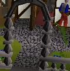
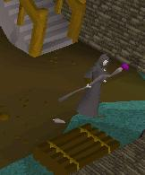
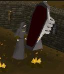
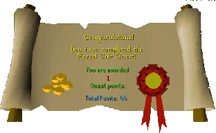
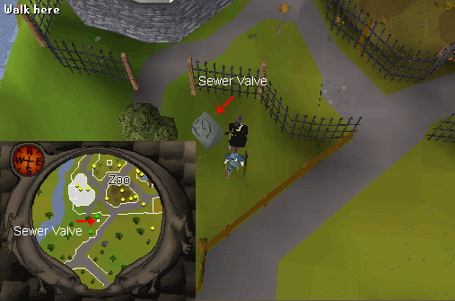
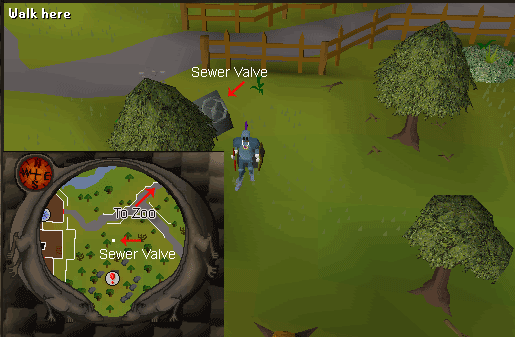
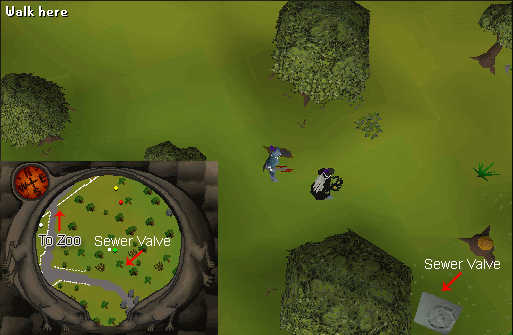

Hazeel Cult
Description: Discover the truth behind the Carnillean family fortune. Decide for yourself whether to aid the Carnilleans in retrieving stolen goods, or join the Hazeel cult members in their mission to resurrect the infamous Lord Hazeel.Difficulty: Novice
Length: Medium
Items & Skills Needed:
- None
Reward: 1 Quest point, 1,000 Thieving XP, 2,000 coins, a real cool armour if you side with Clivet
Instructions:
First, go to the Carnillean Mansion and talk to Ceril near or in the 1st floor of it.
Then, go south and cross a bridge. Go around the building and enter the cave marked by the red !. Talk to Clivet and then choose whom to join up with. For the more interesting plot, join Clivet, or go the easy route and join Ceril.
Join Clivet
Listen to what Clivet says and agree to help him. Then, Clivet will give you poison and tell you to kill a member of the Carnillean family.
Go into the Carnillean Mansion, take the ladder at the back of the mansion down into the basement, and use your poison on the stove.

Climb back up, take the stairway, and talk to Philipe to find that you have killed their dog.
Return to Clivet and tell him the good news. He will give you an ammy that looks somewhat like a golden symbol of Zamorak. Wield it, and exit the cave.
Next, turn all the sewer valves—except the one closest to the dungeon—right. Turn the one closest to the dungeon left. The location of each valve is on the bottom of this guide.
Return to the cave and take the raft near Clivet. Follow the path to Alamone. Talk to him and he will tell you to find a magical scroll in the Carnillean mansion. Then, leave via the raft and climb out of the cave.

Return to the Carnillean mansion with your symbol still equipped. Talk to the butler on the 1st floor.
Then, climb down the ladder and search both crates for a key.
Afterwards go up the ladder and to another flight of steps. Talk to the butler once more and then knock on the wall he is standing by. Then, go up the ladder, use your key on the chest, and search the chest. Leave the mansion.
Go back into the cave and DO NOT TAMPER WITH THE SEWER VALVES. Take the raft back to Alamone with the scroll, and talk to him. He will start a ritual and summon Hazeel (level 296) back from the dead. Hazeel will thank you and reward you. Quest Complete.

Join Ceril
Talk to Clivet but do not agree to anything he says.
Return to Ceril and talk to him.
Next turn all the sewer valves but the one closest to the cave going west, right. and turn the one closest to the cave left. The location of each valve is on the bottom of this guide.
Enter the cave and take the raft to Alamone. Talk to him and find out the butler is his spy. He should then attack you. If he doesn't, try again. He is only level 13, so you should be able to kill him fairly easily. He will drop the Carnillean armor.
Leave the island via the raft and exit the cave. (Well, if you want to get one of Ceril's shields for yourself: after you kill Alamone, take the sewer ride back out, then take it back in. Drop your armor that you already have. Wait for Alamone to respawn, then fight him again. He'll drop another one. Yes, he can drop as many as you want. Before returning to Ceril, put the extra armor in the bank, and bring the other armor back to him.)
Talk to Ceril and give him the armor. Then, tell him about his butler. Ceril won't believe you, so go to the 2nd floor and search the butler's cupboard for some poison. Return to Ceril and receive your reward. Quest completed.
Congratulations, Quest Complete!

Valve Locations
1st Valve: South wall of Carnillean Mansion — turn right

2nd Valve: Directly south of the bridge — turn right

3rd Valve: Directly north of the cave entrance by fence — turn right

4th Valve: South of Ardougne Zoo — turn left

5th Valve: Follow the Zoo fence path south until iron rocks — turn right

This quest guide was written on RuneHQ by Firkløver, G I Jew, MarilynManson, and Mr. Stormy. Thanks to Fudge and joesmo for corrections.
This quest guide was entered into the database on Tue, Apr 27, 2004, at 05:18:50 PM by DRAVAN and was last updated on Thu, Jul 08, 2004, at 06:27:39 PM.